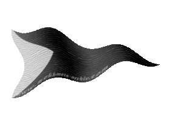
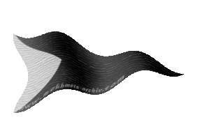

|

|
Das schwarze Brett
|
|
| Übersicht,
Anschläge und Stammtisch (RPG) |
|
Auf der Scherbe gestrandet und was nun? (14  ) )
|
Icke wieder
  |

Suche dir einen Mentor, der dir nicht nur das nötige Startgeld und eine Erstausrüstung bereit hält, sondern dir auch wichtige Tipps zum Start geben kann.
Als Gegenleistung erhofft er sich, dass du dich seiner Gruppierung anschließt, deine Betriebe bei ihm setzt, du ihn als Lehensherrn anerkennst und ein langfristiges Interesse entwickelst, auf der Scherbe zu bleiben.
Ein mögliches Starterset könnte folgendermaßen aussehen:  + +  + +  + +
1 Schuppenpanzer + 1 Kriegsbeil + 200.000 Klimperlinge Handgeld (davon werden Kriegergilde und Lehenskosten bezahlt) + Bauplatz der zukünftigen Gebäude und Material
Randnotiz: Abenteurer die alles alleine machen möchten, können durch das Ausbauen in Städten sich das erste Handgeld selbst verdienen. Das Starterpaket sind ungefähr 16 Ausbauten nach aktueller Marktlage (bei 35k pro Ausbau). Das sind keine 3 Tage Arbeit wenn man alle APs nutzt.
Und nu?

 Mein geschwätziger Onkel sagte immer: Ruhm ist etwas, dass einem niemand madig machen kann!.. ..oder so ähnlich. Mein geschwätziger Onkel sagte immer: Ruhm ist etwas, dass einem niemand madig machen kann!.. ..oder so ähnlich.
 In die Burg (6. Stufe Kriegergilde notwendig) wird der Hauptcharakter platziert, sofern es nicht ein Krieger oder Magier ist und jene Chars, die bereits angeworben wurden und noch keinen Platz in der neuen Produktion finden. (Allgemein rate ich von einem HC-Magier ab!) In die Burg (6. Stufe Kriegergilde notwendig) wird der Hauptcharakter platziert, sofern es nicht ein Krieger oder Magier ist und jene Chars, die bereits angeworben wurden und noch keinen Platz in der neuen Produktion finden. (Allgemein rate ich von einem HC-Magier ab!)
Suche dir 1 Krieger und Rest Magier. (Menschen, wenn du dir spätere Rassen-Mali-Abenteuer ersparen willst.)
 + +  + + + +  + + ... + + ...
Der Krieger wird mit dem Schuppenpanzer und Kriegsbeil bestückt und auf "Nahkampf vorsichtig" gestellt .
Die Magier gehen in den Fernkampf und nutzen den aktuell höchsten Zauberspruch. (Details bei deinem Lehensherrn des Vertrauens).

Such dir (Forum oder mit Hilfe des Lehensherren) anfangs Ratten (die skillen als einzige Monster den Krieger bis 35). Baue - falls kein Gasthaus in der Nähe ist - selbst ein Gasthaus und kauf bei deinem Lehensherren die notwendige Unterstützung:
+ Bau- und Versorgungsmaterial
+ Fuhrwerke (1 Elefant = 2 Ausbauten; 1 Elefant = 1500 Traglast bei vollem Skill (20 Tiere treiben) ansonsten prozentual)
Von jetzt an skillst du bis 10.000 Ruhm. Dann wirb den 6. Mann (den 5. Magier) an.
Ab jetzt geht es zu Orks. Nimm das Gasthaus gleich mit. Ziel: 100k Ruhm. +1 weiterer Magier

100k Ruhm erreicht! Und nu?
Ruhmpause. Krieger kommt in die Burg.
Nun wendest du dich deiner Produktion zu. Bestenfalls stimmst du die Betriebe etwas mit deiner Umgebung ab, damit die Abnahme der Waren gewährleistet ist.
Die Jahreszeiten sorgen immer wieder dafür, dass du mal gut und mal schlecht verkaufen kannst. Es gibt für alles eine Lösung aber das würde jetzt den Rahmen sprengen.
 Bilde deine Produktionsleute aus. Dafür benötigst du eine Handwerkerschule (frage deinen Lehensherren oder im Forum wo die nächste ist). Bilde deine Produktionsleute aus. Dafür benötigst du eine Handwerkerschule (frage deinen Lehensherren oder im Forum wo die nächste ist).
XP sammelst du am effektivsten, wenn du auf einem Kernfeld (Wiese, Wald) stehst und dort "5 x sammmeln" klickst.
5 x sammeln = 35 XP
Du musst die Basis nicht gleich auf 100 ziehen, weil Produzenten auch erst nach und nach skillen. ABER sobald der Skill an der Basis dran ist, erhöhe sie wieder.
Was Basis ist? Frage deinen Lehensherren ;)
Randnotiz:
Die Zeit des XP-Sammelns ist die beste Zeit um z.B. deinem Charakter Tiefgang mit einer Charbeschreibung zu geben. Oder ein passendes Avatar zu suchen. Oder eine Gebäudebeschreibung zu basteln. Wissen sammeln in Foren (größere Gruppen haben oft einen erweiterten Wissensschatz in externen Foren).

Boah, irgendwann muss auch wieder Schluss sein mit XP-Sammeln!
Klaro!
Nächstes Ziel: 1 Mio Ruhm und zwar immer noch mit der Ruhmgruppe (der Krieger hat in der Burg ein wenig Parade mitbekommen).
  In der Magierakademie und Kriegerschule erhöhst du die Basis deiner Ruhmgruppe und behältst so den Skill (Krieger: Parade (Nahkampf optional)), Magier (50 MK, danach 100 INT/MED gleichmäßig hochziehen) In der Magierakademie und Kriegerschule erhöhst du die Basis deiner Ruhmgruppe und behältst so den Skill (Krieger: Parade (Nahkampf optional)), Magier (50 MK, danach 100 INT/MED gleichmäßig hochziehen)
Krieger und Magier skillen unterschiedlich, lass dir das von deinem Lehensherren erklären!
 Mittlerweile sind 4-8 Wochen vergangen und deine Magier sollten schon tendenziell Eisregen haben oder kurz davor sein. In den nächsten 8-16 Wochen machst du dann deine 1 Mio Ruhm voll. Mittlerweile sind 4-8 Wochen vergangen und deine Magier sollten schon tendenziell Eisregen haben oder kurz davor sein. In den nächsten 8-16 Wochen machst du dann deine 1 Mio Ruhm voll.
Und zwar an Spinnen!

Parallel:
Du ruhmst an Spinnen mit dem Ziel auf 1 Mio Gesamtruhm.
Du baust deine Produktionsbetriebe weiter aus, der Skill deiner Prodder steigt und du erhöhst ihre Basis.
Du verdienst mittlerweile sogut, dass du dir mit Erfrischungstränken deinen AP-Vorrat erhöhst.
Ab 1 Mio Ruhm:
Zusammenstellung deiner Wunschgruppe (je nach Wunschgruppe entweder erst die 10 Mio Ruhm mit Ruhmgruppe oder skillen und ruhmen gleichzeitig) << lass dich hier unbedingt von einem (fähigen) Lehensherren beraten! Ob Wirtschafter, Experimentierfreudiger oder PvPler: Es gibt immer Fehler, die vermieden werden können, wenn man sich im vornherein seine Gedanken macht!
Alles andere:
Bekanntschaften schließen,
RP schreiben,
Stadt führen,
Wohnung bauen,
Konvent übernehmen,
Scherbe bereisen,
Eigene Nation gründen,
Seemann, Erfinder, Killer, Handelsmann, Stratege, Mentor … berühmt oder berüchtigt werden,..
…

...das liegt ganz an dir und deinem Charakter!
Fürst Ottor Waefre,
Vorsteher von Oneiros
Zur 3. Stunde am 25.Blumenmond im Jahre 452 |
24.09.12 20:58
|
|
| Agrippa Feuerhauch dè Arsakes (RIP) |
Klasse gemacht!
*Auch wenns ein Frosti ist, na ja ab und an haben auch die mal nen Geistesblitz und viel viel zeit *gg*
Baronesse Agrippa Feuerhauch dè Arsakes,
Vorsteherin von Nebelküste,
Ehefrau des ehrenwerten Thelarion Feuerhauch
Zur 11. Stunde am 25.Blumenmond im Jahre 452 |
24.09.12 22:45
|
|
| Chevonne (RIP) |
Eine viel bessere Variante seine Langeweile zu vertreiben...wie ich finde. *auffällig zu Agrippa schielt*
Chevonne,
Priesterin im Dienste des einzig wahren Glaubens an Wendaria,
Anführerin der glorreichen Nation "Orden der Sinne"
Zur 21. Stunde am 35.Blumenmond im Jahre 452 |
27.09.12 9:11
|
|
| Gandalf (RIP) |
Hut ab Ottor.. echt witzig gemacht
Markgraf Gandalf,
Vorsteher von Esturia Nova
Zur 14. Stunde am 39.Blumenmond im Jahre 452 |
28.09.12 5:58
|
|
Udra Dronn
  |
Gefällt mir
Ratsherr Udra Dronn,
Vorsteher von HEL
Zur 21. Stunde am 39.Blumenmond im Jahre 452 |
28.09.12 7:32
|
|
Grace
 |
*etwas unter "alles andere" hinzufügt*
Alles andere:
Bekanntschaften schließen,
Kriegserklärungen einsammelt,
RP schreiben,
Stadt führen,
Wohnung bauen,
Konvent übernehmen,
Scherbe bereisen,
Eigene Nation gründen,
Seemann, Erfinder, Killer, Handelsmann, Stratege, Mentor … berühmt oder berüchtigt werden,..
…
Ritterin Grace,
Vorsteherin von Castle Graceskull,
Verlobte des ehrenwerten Fabius Alagos
Zur 10. Stunde am 40.Blumenmond im Jahre 452 |
28.09.12 10:33
|
|
| Bres Lugh Elatha (RIP) |
Das habt Ihr schön gezeichnet werter Ottor. Ihr müsst viiiiiel Zeit haben.. ?
Sir Boyne Lilias,
Anführer der glorreichen Nation "Leuchtende Dunkelheit",
Verlobter der reizenden Wynne
Zur 11. Stunde am 42.Blumenmond im Jahre 452 |
28.09.12 22:03
|
|
| Gwydion de Ville (RIP) |
((guter Beitrag, aber ich hätte ihm in newbies und fragen lieber gesehen))
*schaut stirnrunzelnd auf den Beitrag*
Lehenschaften sollten immer gut überlegt sein
Sir Gwydion de Ville,
Unfähiger Diener,
Anführer der glorreichen Nation "S.T.U.R.M.",
Hahn im Korb
Zur 20. Stunde am 49.Blumenmond im Jahre 452 |
30.09.12 15:24
|
|
| Knuffel Flammenhaar (RIP) |
Sklaven opfern sollte ebenso gut überlegt sein.....
Baron Knuffel Flammenhaar,
Vorsteher von Hobas i îth,
Anführer der glorreichen Nation "Krieger des Lichtes",
Hüter des Hortes
Zur 16. Stunde am 55.Blumenmond im Jahre 452 |
01.10.12 23:57
|
|
Abdiel der Gehörnte
 |
*bedächtig nickt und dann voller Entsetzen über diese ungeheuerliche Tat von dannen eilt*
Freiherr Abdiel der Gehörnte,
Vorsteher von Lichtergarten
Zur 14. Stunde am 68.Blumenmond im Jahre 452 |
05.10.12 0:24
|
|
Sìn Mortiarea
  |
... nun, wie es aussieht hat mein Lehensherr ja gar keine Sklaven geopfert *theatralisch seufzt* nur mit der falschen Tempelhure rumgemacht ... *etwas leiser murmelnd* ... tyyyyyyyyyyyyypisch ...
Lady Sìn Mortiarea,
Vorsteherin von Thanateion
Zur 9. Stunde am 70.Blumenmond im Jahre 452 |
05.10.12 10:24
|
|
Icke wieder
|
Ihr könnt auch Fragen stellen, entweder hier - dass sie von allen beantwortet werden können - oder anonym an mich oder Eurem Lehensherren des Vertrauens^^
Herzog Ottor Waefre,
Vorsteher von Oneiros
Zur 12. Stunde am 37.Dunkelfrost im Jahre 452 |
08.11.12 18:23
|
|
Icke wieder
|
In fleißigen 3 oder gemütlichen 6 Monaten zum ruhmreichen Millionär ;)
Fürst Ottor Waefre,
Vorsteher von Oneiros
Zur 15. Stunde am 10.Erntemond im Jahre 453 |
04.01.13 11:47
|
|
Icke wieder
|
Ich freue mich über weiteres Feedback. Schreibt mir was gut lief und was hätte besser formuliert sein müssen, dann kommt vielleicht mal ein Update.
Fürst Ottor Waefre,
Vorsteher von Oneiros
Zur 16. Stunde am 40.Blumenmond im Jahre 454 |
15.03.13 11:58
|
|
Ninniach Lhuthien
  |
Werter Ottor,
Eure Zusammenfassung ist sehr, sehr gut. Ich hätte sie gerne zu Beginn meiner Scherbenzeit gehabt.
Doch scheint es mir, das ich auch heute, nach vielen Scherbenjahren, noch etwas lernen kann.
Ihr schreibt unter: "Alles andere" unter anderem auch: "Wohnung bauen".
Nur das habe ich bis heute noch nicht so richtig in Erfahrung bringen können, wie das funktioniert. Welche Voraussetzungen dafür gegeben sein müssen usw.
Es wäre sicher für viele hilfreich, wenn Ihr den Punkt ein wenig erläutern könntet.
Liebe Grüße und Dankeschön
Ninni
Freifrau Ninniach Lhuthien,
Vorsteherin von Tinu Anorêl,
Anführerin der glorreichen Nation "Nûr nui Ninniach"
Zur 17. Stunde am 40.Blumenmond im Jahre 454 |
15.03.13 12:15
|
|
| Shagdreg (RIP) |
Klasse gemacht !
Shagdreg
Zur 24. Stunde am 40.Blumenmond im Jahre 454 |
15.03.13 13:53
|
|
| Farodan (RIP) |
Wirklich eine gute, kleine Einführung wie es laufen kann.
Echt gut!
Freiherr Farodan,
Vorsteher von Landreth
Zur 4. Stunde am 53.Blumenmond im Jahre 454 |
18.03.13 9:54
|
|
Icke wieder
|
Das Wohnrecht erhält man
indem Euch Wichtel für besondere Leistungen in großen Abenteuern belohnen.
oder
indem Euch Konvente für eine besondere Tat ehren.
Was nicht klappt: Darauf warten, dass ein Wichtel oder Konvent auf Euch aufmerksam wird. Ihr müsst in beiden Fällen die Initiative ergreifen.
Über das "wie" kann man mit mir per Taube kommunizieren.
Fürst Ottor Waefre,
Vorsteher von Oneiros
Zur 23. Stunde am 69.Blumenmond im Jahre 454 |
22.03.13 8:05
|
|
Icke wieder
|
Es gibt unterschiedliche Wege sein Ziel zu erreichen, obiger Beitrag soll eine Hilfestellung an jene sein, die eine wollen.
Fürst Ottor Waefre,
Vorsteher von Oneiros
Zur 8. Stunde am 1.Erntemond im Jahre 456 |
11.09.13 7:39
|
|
| Atrox (RIP) |
Wirklich sehr hilfreich das ganze...
Atrox
Zur 12. Stunde am 61.Erntemond im Jahre 456 |
25.09.13 8:43
|
|
Randolf
   |
Gefällt mir ;-)
Randolf
Zur 11. Stunde am 6.Dunkelfrost im Jahre 465 |
03.11.15 12:30
|
|
Übersicht,
Anschläge und Stammtisch (RPG)
|
|
|
|
Dieser Beitrag
verwendet Regelvariante 3
 |
|
|